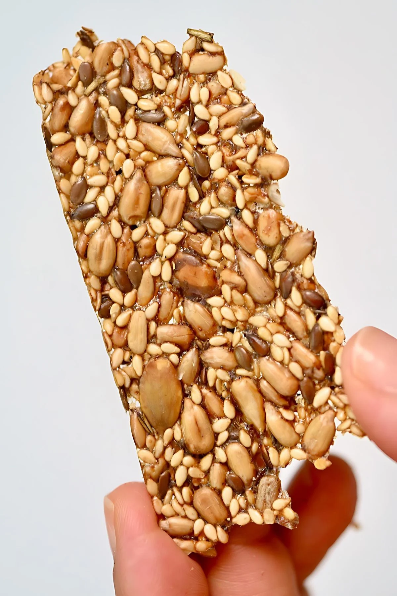

Make these delicious super crispy seed crackers with pumpkin seeds, sunflower seeds, sesame seeds, and flaxseed.
They are so easy to make, packed with nutrients, and great for snacking and platters.
Original recipe here: Alpha Foodie's best seed crackers
